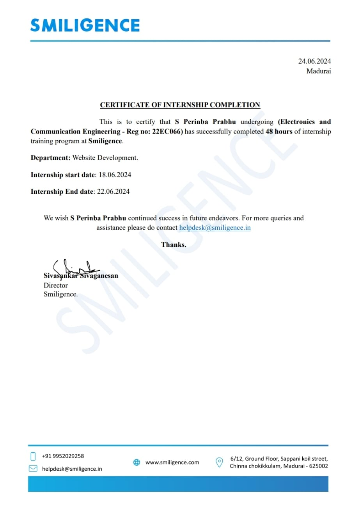
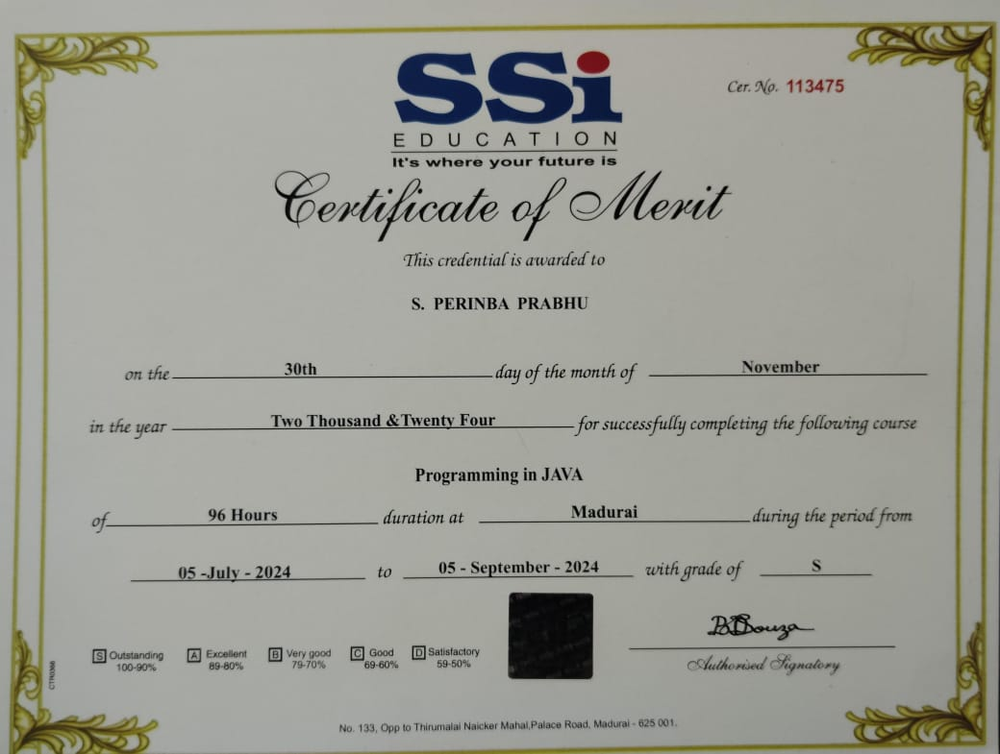
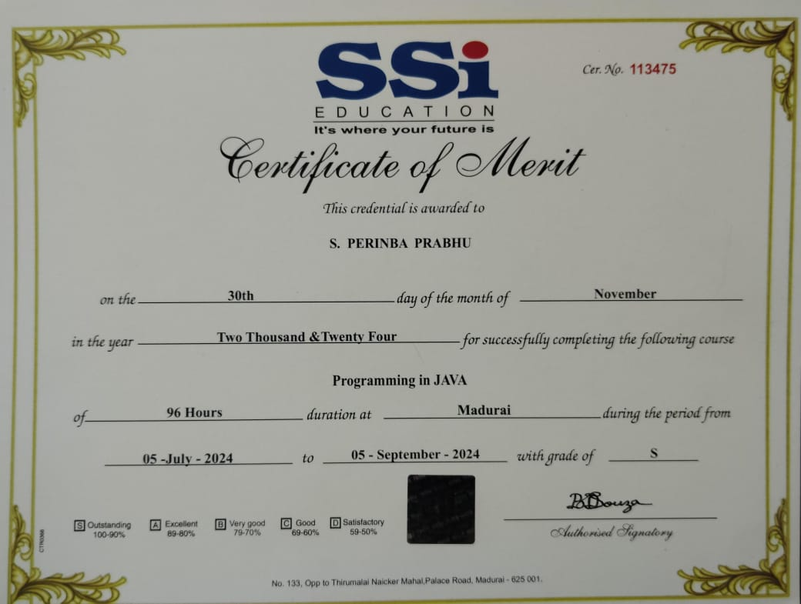

Education
B.E - Electronics and Communication Engineering (2022-2026)
Sethu Institute of Technology, CGPA: 7.603
Higher Secondary School Certificate (2021-2022)
VHN Higher Secondary School – 69.50%
Secondary School Certificate (2019-2020)
KNU Matriculation School – 75.40%
Internship
Smiligence, Madurai
I completed a one-week internship at Smiligence, where I gained hands-on experience in web development. During the internship, I learned key web development skills and applied them to create a personal portfolio showcasing my work.
Certifications

 
